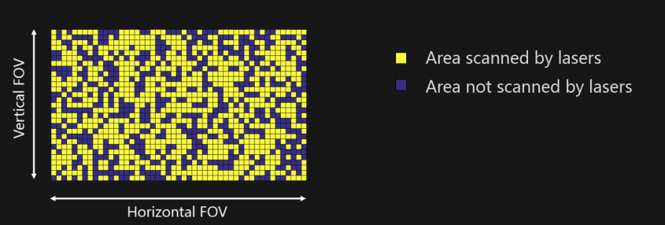
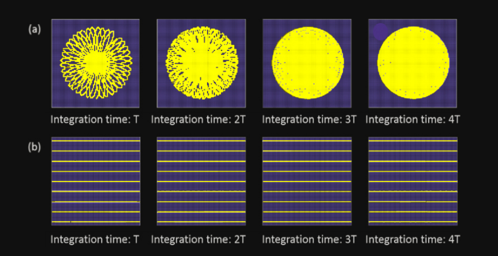
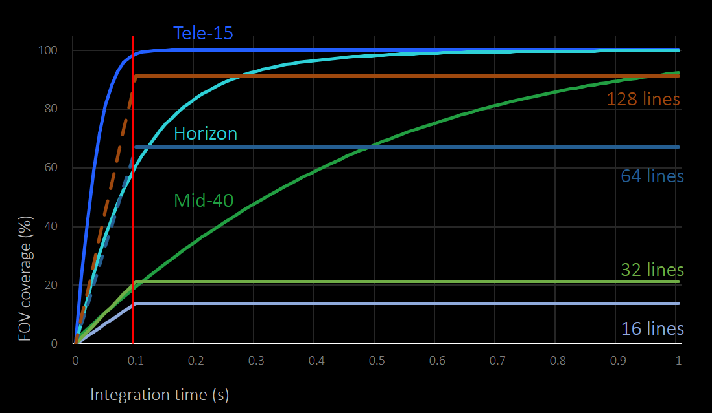

2. Introduction to Livox Scanning Features
2.1. Point Cloud FOV Coverage
The lidar field of view refers to the area detected by the lidar, and all target objects in this area may be detected. However, not all objects in the field of view can be detected. The reasons include:
The target object is too far away from the lidar or is not within the detection range, causing the reflected light of the object to be too weak to be recognized.
During a certain period of time, because the lidar can only illuminate the objects on its scanning path and measure its distance, objects that are not on the lidar scanning path within this period of time cannot be detected.
If the scanning method can be optimized to increase the proportion of the area covered by the laser beam path in the field of view, the probability of the second situation described above can be reduced. Therefore, the area of the laser irradiated area in the field of view is related to the measurement performance of the lidar. This indicator can be quantitatively characterized by the proportion of the area detected by the laser in the field of view of the lidar, which is the field of view coverage. The calculation formula is as below:
The following figure shows the scanning field of view of Lidar. The yellow squares indicate the scanned area, and the blue squares indicate the unscanned area:
2.2. Unique Scanning Pattern
Traditional LiDAR sensors that use mechanical scanning methods often adopt 360-degree linear scanning patterns, with the motor driving the entire laser head to make circling motions. One of the problems with this method is that there are always blind spots, regardless of how long the scanning lasts. This means that some target objects may go undetected.
Livox LiDAR sensors feature non-repetitive scanning patterns which differ significantly from the repetitive linear scanning offered by traditional LiDAR sensors. The areas scanned inside the FOV of a Livox sensor grow the longer the integration time, increasing the likelihood of objects and other details within the FOV being detected. As shown in the images below, a Livox Mid-40 can scan almost the entire area within its FOV as integration time increases.
2.3. Livox Specification
Livox’s lidars: Mid-40, Horizon and Tele-15 all use non-repetitive scanning methods, which have a higher field of view coverage, and as the integration time becomes longer, the field of view coverage will also increase significantly, untill close to 100%, that is, almost all areas in the field of view will be irradiated by the laser beam, as shown in the following figure:
According to the calculation, the FOV coverage of Livox Mid series sensors within 100 ms is similar to that of traditional 32-line LiDAR sensors.
The Livox Horizon can reach a FOV coverage of 60% within 100 ms, which is the equivalent to most 64-line LiDAR sensors.
The Livox Tele-15 can even reach a FOV coverage of 99.8% within 100 ms.